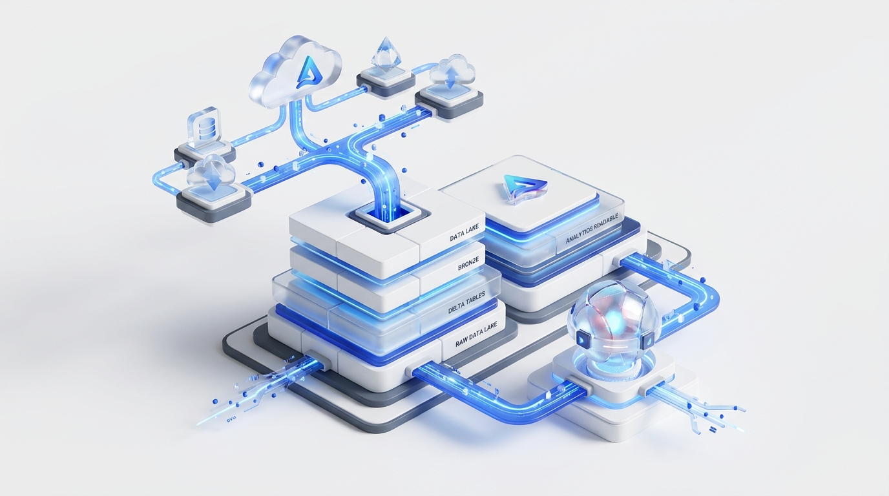
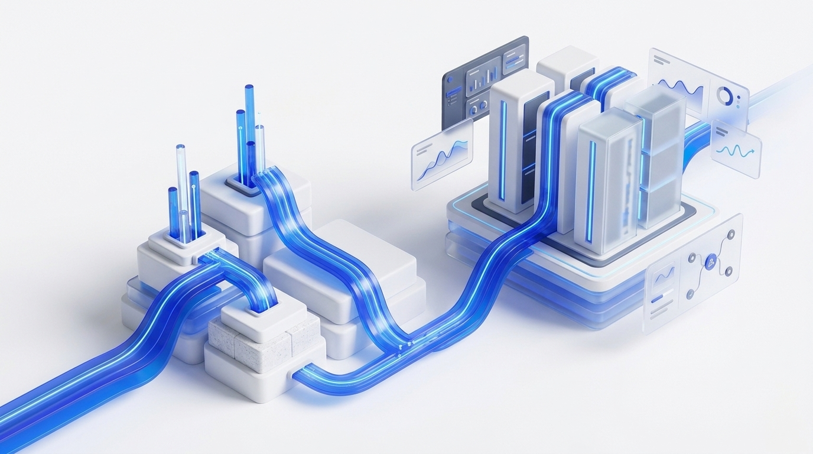
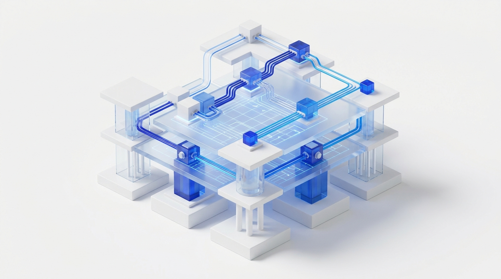

The Integration Chasm
Sales waits three days for custom quotes. Finance spends 15 hours every Monday reconciling ERP revenue with CRM pipelines across five contradictory spreadsheets.
AARK Innovations is the premier technical consulting partner for mid-market and enterprise organizations. We eliminate the costly operational friction between your core Oracle ERP systems, modern cloud data platforms (Snowflake, Databricks, AWS, Azure), and applied AI workflows. No junior handoffs. Just battle-tested architects.
CONSULTING PRACTICES
Enterprise ERP, modern data platforms and applied AI — delivered by the same principal consultants from scoping through go-live and support.

Fusion Cloud ERP implementations and rollouts, EBS migrations, and OIC integration architecture.

Modern Lakehouse builds on Databricks and Snowflake with resilient pipelines and landing zone architecture.
Targeted AI agents and process automation layered on verified ERP and data foundations.

Enterprise connectors across Oracle Integration Cloud, REST APIs, FBDI, and hybrid cloud ecosystems.

Modernizing operational workflows without the risk, delays, or multi-year bloat of traditional consultancies.

Hands-on principal consultants from initial blueprint and scoping through go-live and ongoing hypercare.
CONSULTING PILLARS
Enterprise systems, modern cloud data platforms, and applied AI automation built by senior practitioners.
Senior-led implementations, EBS coexistence, financial consolidation, and risk-free cloud modernization.
02AI set up in the email and software you already use, for the replies, requests and paperwork your team repeats, with training for your staff.
03Brokerage, property, shopping center, and property management websites, which are our specialty.
04Logos, identities, and names for businesses and properties, with the artwork for signs, documents, and the web.
05Brochures, offering memorandums, flyers, and presentations, designed for print and digital use.
We build architectures that scale seamlessly across Oracle Cloud Infrastructure (OCI), Microsoft Azure, Amazon Web Services (AWS), and hybrid on-premises environments with zero vendor lock-in.
Your systems aren't broken. They're just trapped in silos — quietly costing you deals, delaying executive reporting, and slowing delivery every month.
Sales waits three days for custom quotes. Finance spends 15 hours every Monday reconciling ERP revenue with CRM pipelines across five contradictory spreadsheets.
Skipping core ERP and lakehouse foundations to build speculative AI pilots is why 85% of corporate AI projects stall. AI is only as capable as the data underneath it.
Your best people are copying data between systems, answering repetitive RFPs from scratch, and manually keying order numbers from PDFs instead of growing the business.
No 80-page strategy decks that sit on a shelf. No junior handoffs or surprise billings. A disciplined, sequential journey from diagnostic blueprint to production cutover.
We inspect your core ERP (Oracle Fusion/EBS), data pipelines, and manual spreadsheet workflows to identify exact friction points and quantify lost hours.
Start with clarity — a 2- to 3-week deep dive before writing a single line of code.
Clear milestones, fixed timelines, and fixed pricing. You receive an architectural roadmap with exact effort estimates, risk factors, and projected ROI.
No surprise invoices, running meters, or open-ended billable hours.
Senior architects configure enterprise Oracle modules and unify disconnected operational feeds into high-performance cloud data lakehouses (Snowflake, Databricks, OCI).
Foundations first — clean transactional reality before automation.
Deploy reliable real-time event streaming and API middleware. Routine CRM leads, sales quotes, and ERP revenue reconcile automatically across your ecosystem.
Automate the glue — eliminate cross-system data re-entry completely.
Deploy private domain AI to automate high-volume knowledge tasks: instant RFP responses with footnote citations, dynamic CPQ pricing, and invoice parsing.
AI grounded strictly in verified source data — zero speculative novelty.
Every automated action, complex discount, or critical data transformation includes explicit exception routing and human approval gates before final ERP commit.
The approval gate — your team remains in total control at all times.
Thorough testing, user training, and complete documentation with zero vendor lock-in. Your internal engineering team owns the code and operates with total independence.
Working software delivered in 2 to 4 weeks with dedicated post-launch support.
Fixed-scope certainty. Senior practitioners on day one. Production releases in 2 to 4 weeks.